Design to attract, convert and
delight your customers
The structure of the Centrix HTML template:
On some pages of carousels work on Swiper - The Most Modern Mobile Touch Slider. It's easy to customize, see documentation
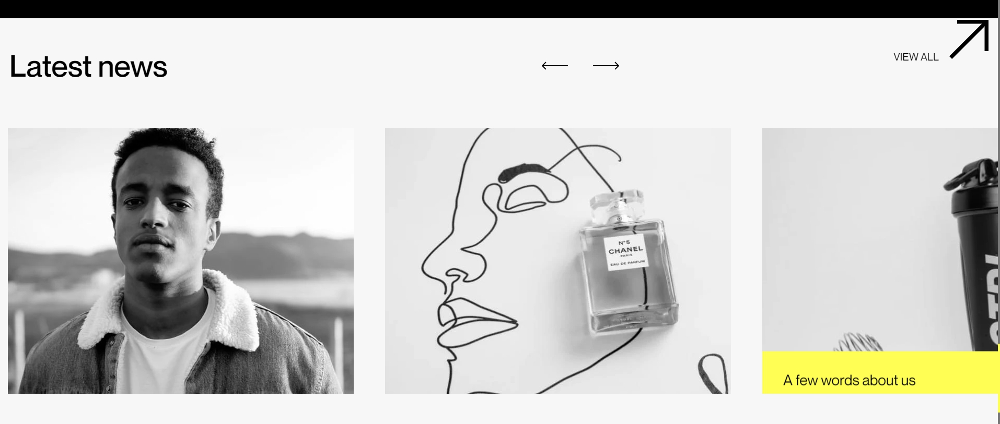
Jquery easy number animate plugin is used to animate numbers See documentation in github
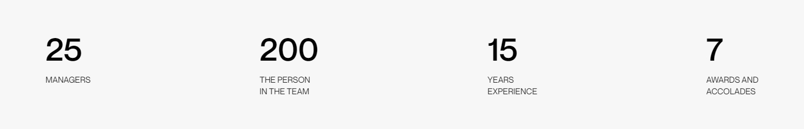
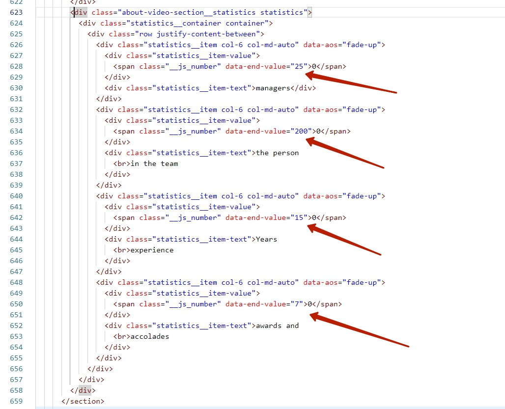
Pages piling works with jQuery PagePiling plugin
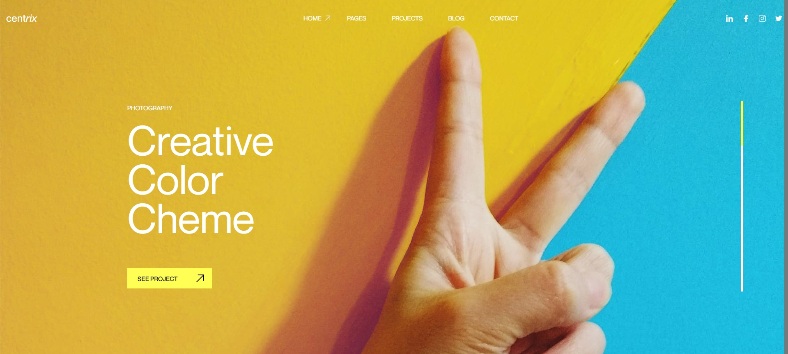
To make black text in section and site header black style add the dark class to the sections with the parallax-projects__section class
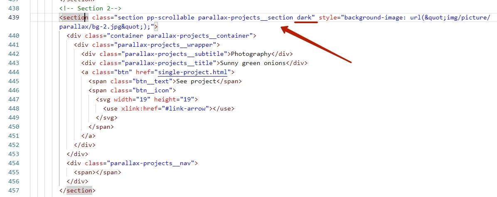
To create masonry grids with a filter, the Isotope plugin is used. See documentation
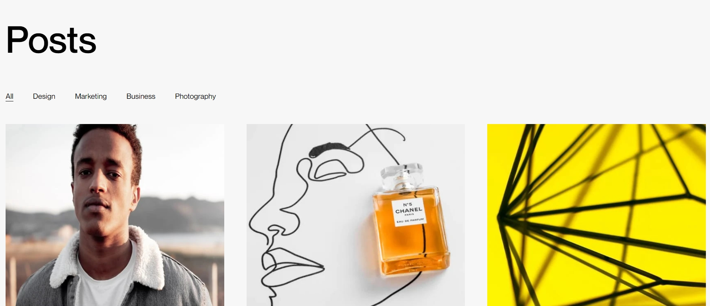
Filters
Each filter has a data attribute with the grid element class (see line 422-426 in the screenshot). An element can have several different classes
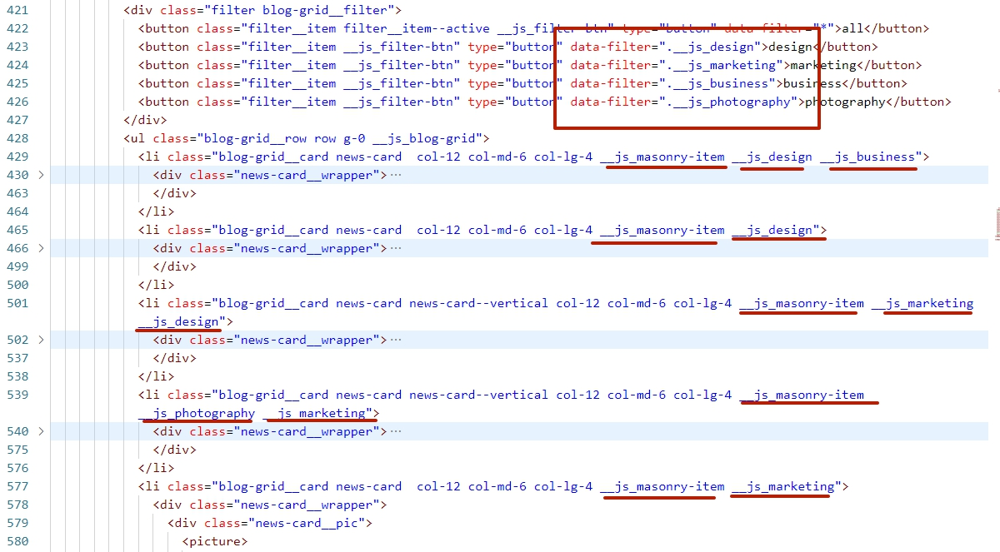
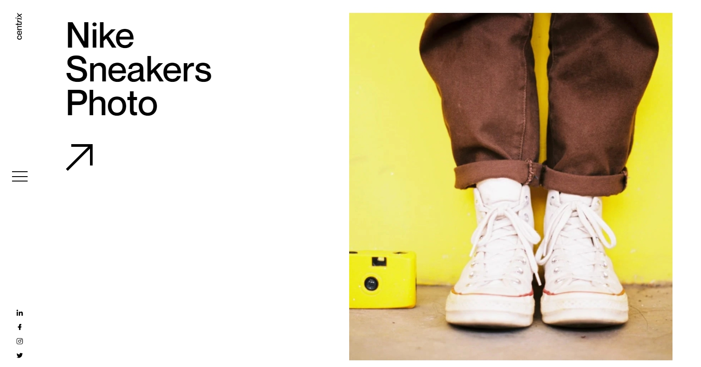
Data attributes
When scrolling, to correctly change the floating information about the project, it is necessary to fill in the data attributes for each project card: data-title - project name (all words should be wrapped in the span tag), data-category - project category (if not, leave it empty), data-url - link to the project page
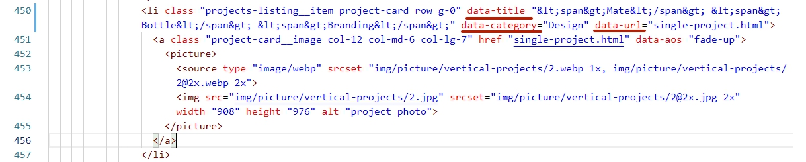
This page uses the jquery marquee plugin. The documentation is located here.
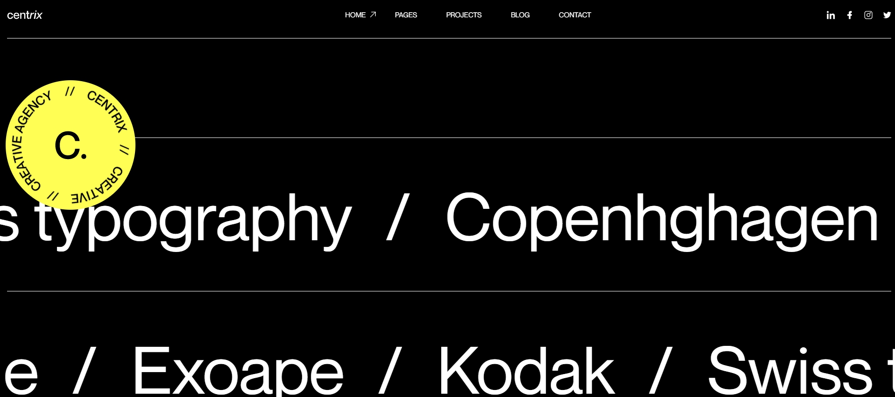
Each word in the line is a link, when you hover the mouse over it, a card with a preview of the project is generated and appears. To display the card correctly, you need to fill in the following data attributes at the link:
data-image - path to the image,
data-image2x - path to the double-sized image to support retina displays,
data-image-w - width of the image in pixels,
data-image-h - height of the image in pixels
If you do not need support for the webp format, you need to remove the data-webp attribute from the link. The name of the webp file should be the same as the main image.
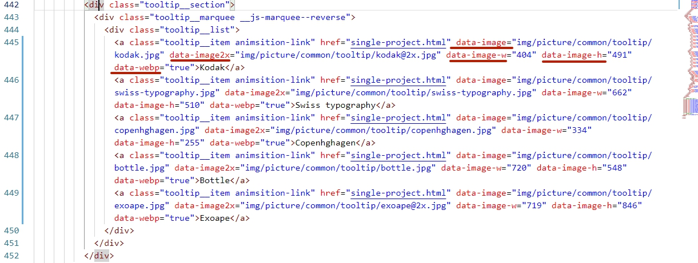
To support retina displays, you need an image that is twice the size. You also need to add the srcset attribute to the img tag with the path to the image. Don't forget to add 2x.
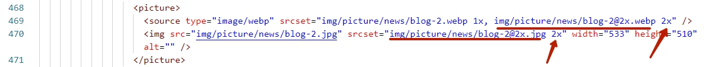
Modals work with the fancybox plugin It is easy to configure, see the documentation
The site uses Google maps. To replace the card with your own do the following: